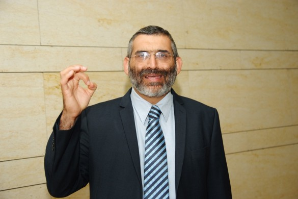

LEARN TO YEARN FOR THE BEIS HA’MIKDASH - Part 2
Doctor Michael Ben-Ari, even before he served as a Member of Knesset (MK), has first and foremost been a researcher of the Mikdash (Holy Temple) with every fiber of his being. He has been living the subject of the Mikdash for over thirty-five years , during which he has made many discoveries that shed new light on the topic. He is a veritable font of encyclopedic knowledge in every aspect of research on the topic, including descriptions of the practices there and how it figured in the lives of the people living then. Additionally, he does not hesitate to dispute various accepted accounts that cast a negative light on the period of the Second Temple and the events that occurred in its final days. * Part 2 of 2

THE HUMAN SIDE OF THE DESTRUCTION OF THE TEMPLE
(As mentioned previously, this interview took place nine years ago, when Doctor Ben-Ari was serving in the Knesset.)
Dr. Ben-Ari’s original research is called “Mishna V’Tosefta B’Zikaron HaMikdash,” but as a researcher of the Mikdash for over 25 years, he is involved in all topics and fields connected to the Beis HaMikdash. During our conversation, he emphasized the Rebbe’s approach again and again, in that he did not stress the negatives of the generation of the churban, but the fact that we need to cry out about the churban every day, as the Gemara says, “Whoever did not have the Beis HaMikdash built in his days etc.”
Many aspects of his work relate to defending the generation of the churban and attempting to take a deeper look at the human side of what transpired to the people of that generation who witnessed the Beis HaMikdash in its glory but then had to deal with the terrible sights of its destruction.
An interesting source that he relies on is the book by Yosef Ben Matisyahu (Josephus), Wars of the Jews, from which many people try to learn about the generation of the churban.
“Before you even look at this book you need to know that Yosef Ben Matisyahu was a captive Jewish commander in the enemy camp. The desk that he wrote on and the ink with which he wrote were provided by the Roman army. So too, the food he ate and his very life were granted to him in return for his desertion. So certainly he cannot be used as a source to prove anything negative. But I say furthermore, if we read between the lines and try to understand him, we can learn a lot about the tremendous Jewish power at that time. From what he says, it turns out that it would not have been impossible for the Jewish people to have won the war.
“The destruction of the Mikdash was, at its essence, a spiritual process which derived from G-d’s decree. However, when we look at how the war went from a material perspective, it turns out that the biggest problem of the war was not the strength of the Romans, but the traitors from within who collaborated with the enemy. One can rightly infer that if not for the Jewish traitors, who were a fringe and forsaken group in Yerushalayim but who managed to sabotage the war effort, the Jewish kingdom could have subdued the enemy. Unlike what people usually think, in the period prior to the churban the Jewish nation was strong and powerful. It was a nation for whom the Beis HaMikdash was its heart and soul, and the place that every Jew wanted to reach.
“One of the corrections of the historical record that I wanted to make in my work had to do with how the people felt towards the Mikdash in the period after the churban. There are those who try to present things as though after the churban the Jewish people tried to shake itself off from the Temple period, as though there was an attempt to usher in a new and better era than the time of the Mikdash. This approach is erroneous. From all the sources we see that the hopes of the people in the period after the churban were focused on the Bayis, with great longing for the era of the Bayis and a yearning to return and see it standing again.
“A deep study of the sources shows that the approach of the Jewish people to the entire era that followed the Churban HaBayis was one of coping with loss and not seeing it as some sort of emancipation. It was a given to them that whatever happened was only temporary until the rebuilding of the Bayis. Not only did they not try to move on and try to create a new era, but everything they did was only to heal their wounds that resulted from the churban.
“A well-known saying about the churban was said by Rabbi Akiva: ‘Fortunate are you Yisroel, before Whom are you purified? Who purifies you? Your Father in Heaven, as it says, ‘and I will sprinkle pure water on you and you will be purified.’ And it says, ‘Mikva Yisroel Hashem’ – just like a mikva purifies the impure, Hashem purifies Israel.’
“Whoever reads what Rabbi Akiva said knows how anguished he was after the churban, in that there was no longer a means to bring atonement for Israel. After the churban, the Jewish people went about with the feeling that now that the Bayis was destroyed, there was no way to atone for their sins. That is why Rabbi Akiva said to them, ‘Who purifies you? Your Father in Heaven!’
“Rabbi Akiva was one of the great Tanaim, and he was called by the Sages ‘head of the chachomim.’ He was well aware of the crushed feeling over the lack of means of atonement after the destruction of the Mikdash. As a response to those feelings, he explains to his generation that purity is not dependent on the Kohen Gadol. That is why he brings verses that show that Hashem Himself is the one who purifies Yisroel when they lack the means that were familiar to that generation, such as a Kohen and his service in the Beis HaMikdash.
“It is impossible to ignore the fact that there is far more to his teaching than just addressing that feeling of despair.
Rabbi Akiva is teaching about the nature of the relationship that is both interdependent and unconditional which exists between Yisroel and their Father in Heaven. We find a similar thing with t’filla which serves as a substitute for the sacrifices. ‘“And our lips will replace bulls…” Yisroel said, “Master of the universe, when the Beis HaMikdash existed, we would bring a sacrifice and be atoned and now all we have is prayer…”’
“Another source is what is told about Rabbi Yishmoel who would mark down every time he was obligated in a chatas sacrifice, so that when the Bayis would be built, he would be able to fulfill his obligations. The Rebbe quotes this in a sicha and learns from it how great was Rabbi Yishmoel’s yearning to see the Bayis built once again. This story also teaches us about this feeling that prevailed after the churban, that there was no atonement for sins, which is why he had to write down every time he owed a chatas so that when the Mikdash would be rebuilt, he would finally achieve atonement.”
How did the tapestry of life continue for the Jewish people after the terrible destruction?
“The routine of life for the Jews in Eretz Yisroel was halted abruptly and became one of oppression under Roman rule. The Romans did all they could to break the spirit of the people. The destruction of the Mikdash, the massacres, the confiscation of land, anti-religious decrees, and heavy taxes were all part of the strategy of the Roman government. The intention was clear: to completely undermine any possibility of rehabilitating the Jewish nation. But against all odds and with the determination of their leaders, the nation went and rebuilt many of the institutions that had been destroyed.
“The Sages made enactments for the new reality, i.e., life without a Mikdash. This is the background for the Birkas HaMinim that was added to the prayer service (as the nineteenth blessing of the Amida prayer), which called for distancing all those whose faith had been compromised and whoever became a traitor. This was the background for renewing the chain of the Nesius (formal rabbinic leadership of the descendants of the House of Dovid) in Yavne, after the death of the first Rabban Shimon ben Gamliel, with the return of his son, Rabban Gamliel, to the seat of the Nesius.
“This laid the groundwork for Bar Kochva’s rebellion whose slogan was inscribed on coins, “L’Cheirus Yerushalayim” (for the freedom of Yerushalayim). The rebellion which shook up the entire Roman Empire was branded into its consciousness, a level of devotion that was completely foreign to them. It was the devotion of a nation to its values, its mitzvos, and the center of its existence, the Mikdash in Yerushalayim.”
ALIYA L’REGEL AFTER THE CHURBAN
To what extent does the issue of anticipation of the Redemption play a role in your published research?
“The Mikdash research that I did is not hypothetical, G-d forbid. It is research that was done knowing that it will all come back to us with the Geula Shleima. That’s why the research is immersed in the yearning for the building of the Bayis. Every day, we anticipate and pray ‘Return to Yerushalayim Your city in mercy and dwell in it…’ We know this will happen in our generation.
“There are many sources in statements of the Sages that talk about the yearning of the generation of the churban for the building of the Beis HaMikdash. They relate that after the churban, and after the Romans forbade going up to the Beis HaMikdash, many continued to go to Yerushalayim with mesirus nefesh, endangering themselves because of their desire to renew the avoda.
“I devoted a lot of work to learning about the desire of the Jewish people right after the churban to return to the Beis HaMikdash. These statements of fact make a strong impression on all who read them.
“If we understand what was happening at that time, we would understand what a tremendous yearning there was in the hearts of those Jews to return to the Beis HaMikdash. According to descriptions by Yosef ben Matisyahu, the destruction of the Mikdash was just the beginning of the destruction. After burning the Heichal and the Mikdash, Roman legions, by order of Titus, worked to destroy the entire city (Wars of the Jews, 7, 1, 1): ‘And the Caesar ordered to destroy the entire city and Mikdash to the foundation …’ The rest of the wall surrounding the city was destroyed in a manner that left no sign of it for any future visitor to know that this place was ever inhabited!
“The encampment of the tenth legion among the ruins of the city ignited the anger of the Jews and deepened their anguish. One could draw a connection between this painful situation and the reactions of the Sages who saw a fox emerging from the Holy of Holies, as the Midrash Eicha describes: ‘Another time, they went up to Yerushalayim. They reached (Mount) Tzofim and tore their clothes. They reached the Temple Mount and saw a fox emerge from the Holy of Holies and they began to cry. Rabbi Akiva laughed …’
“Hadrian changed the name of Yerushalayim to Aelia Capitolina. In the place of the Mikdash, he had a building made for one of his gods. On top of that, there was the Roman decree forbidding entry to Yerushalayim for Jews, a decree that went into force after Bar Kochva’s rebellion.
“These actions and the continuous persecution should have been sufficient to detach the nation from what was once the Beis HaMikdash and the center of their being. However, examining the sources shows us that the plan was not at all successful. Indeed, one of the most powerful expressions of the connection of the Jewish people to the Mikdash in Yerushalayim is the story of the Aliya L’Regel after the churban.
“There is a Midrash that tells of a man named Shimon Kametria who lived in a place that, according to the sources, is in the Syrian Golan Heights, very far from Yerushalayim. His job was to lead caravans to the Mikdash. We find that after the churban, he asked his rav whether he has to tear his clothes each time he goes to Yerushalayim, as the Halacha states that whoever sees Yerushalayim destroyed needs to tear his clothing in mourning. His rav responded that if he visits Yerushalayim over time intervals of more than thirty days, he has to rend his garments. From this Midrash we can learn about that period and the anticipation for Geula, when as far away as from what is now the Syrian Golan Heights, there were still caravans of people going to visit Yerushalayim at fairly regular intervals, despite the decrees and the dangers.
“Another Midrash tells of a woman who transgressed the vow made by her husband who forbade her to continue visiting the Mikdash after its destruction. However, she continued to go up to Yerushalayim, despite the tremendous danger and the uncertainty of whether she would even succeed in making it to the spot where the Mikdash had stood.
“Among the variety of sources which deal with the subject and are scattered throughout the writings of the Sages, the section of Midrash titled Eileh Ezkerah within Midrash Eicha stands out, as it describes the heroism of those going up to visit the ruins of the captive and wrecked city. It is structured in the form of a poetic lament, and goes on to contrast the Jewish memory of earlier times with those times, and the Aliya L’Regel of the days when the Bayis stood with the Aliya L’Regel of the days after the destruction. The author brands into memory the past versus the present, days of joy as opposed to days of mourning, a beautiful structure as opposed to terrible ruin, celebrations as opposed to anguish, freedom as opposed to captivity. In this Midrash is expressed the emotional turmoil of a nation which refuses to detach from the source of its life, even as it lies in ruins.”
In conclusion?
“The yearning and demand for the Mikdash is not something that is unique to after the destruction, but we find an example of it even during the times when it stood in all its glory. An example of this is the Simchas Beis HaShoeiva. This event was born as a direct result of the demand of the ‘Chassidim and Anshei Maaseh’ (the pious and the men of deeds) to be allowed to come to the Beis HaMikdash even after the closing of the gates. At the conclusion of the service of the day on the holiday of Sukkos, with the entire Jewish people having converged on Yerushalayim in honor of the Regel, a group of Chassidim – men who wanted to conduct themselves in a pious fashion, beyond what the law requires – stood outside of the gates of the Beis HaMikdash. Their demand was that they be allowed to continue to spend time inside the courtyard and in immediate proximity to the Bayis.
“When the gates were closed in their faces, they did not go home but began to dance outside, out of an intense desire to be connected to the Mikdash. People began flocking from all over Yerushalayim to see those Chassidim and Anshei Maaseh dancing up a storm outside of the Beis HaMikdash, and they remained to join them into the wee hours of the morning. This ended up being the impetus for establishing the yearly event of Simchas Beis HaShoeiva. In this story we see the intense love for the Mikdash expressed, the love of those Chassidim who demonstrated a deeper connection to the Mikdash than the accepted standard of the time. Perhaps it is this great love for the Mikdash that earned them the title of Chassidim.
“I recommend to each of your readers that they open up the fascinating sources which teach about the awesome power of the Mikdash experience and the purity and refinement of life that surrounded it. All of this serves to awaken a love for the Beis HaMikdash, an anticipation and yearning. We see that when the Rebbe spoke of the destruction of the Beis HaMikdash, he described it in vivid color, as if it was actually happening in real time. He screamed about the need for us to cry out over the fact that “Shechinta B’Galusa” (the Sh’china is in exile), and he urged us to desire to return to the avoda in the Beis HaMikdash.
“Studying the sources is an integral part of the hope and demand for the Redemption. May we immediately merit the True and Complete Redemption and the ‘return the Kohanim to their avoda, and the Leviim to their song and music.’”
Sholom Ber Crombie. "LEARN TO YEARN FOR THE BEIS HA’MIKDASH - Part 2." Beis Moshiach, no. 1127 (July 18, 2018).